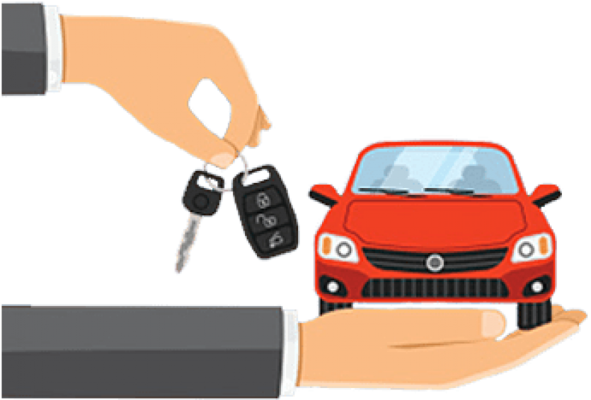

Kupnja automobila za početnike.
Objavljeno: 01.01.2026.
Kupnja prvog automobila može biti izazovna za početnike jer zahtijeva balans između cijene, pouzdanosti i troškova održavanja. Preporučuje se započeti s jasnim budžetom koji uključuje ne samo cijenu vozila, već i registraciju, osiguranje i početne servise.
Za početnike su često najbolji izbor manji i pouzdani automobili s jednostavnom mehanikom. Vozila s manjom snagom motora obično su jeftinija za osiguranje i lakša za upravljanje, što povećava sigurnost i samopouzdanje vozača.
Prilikom kupnje rabljenog automobila važno je provjeriti servisnu povijest, stanje motora i kilometražu. Ako je moguće, dobro je povesti iskusniju osobu ili mehaničara kako bi se izbjegli skriveni kvarovi.
Potrošnja goriva također igra veliku ulogu kod početnika. Ekonomični automobili smanjuju mjesečne troškove i čine svakodnevnu vožnju pristupačnijom, posebno u gradskim uvjetima.
Na kraju, važno je odabrati automobil u kojem se vozač osjeća ugodno i sigurno. Dobra preglednost, jednostavne kontrole i udobno sjedalo mogu znatno olakšati prve vozačke korake.
Galerija
